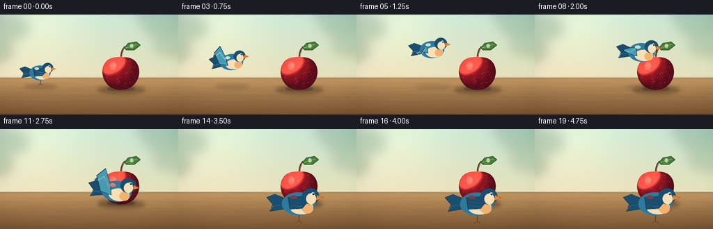
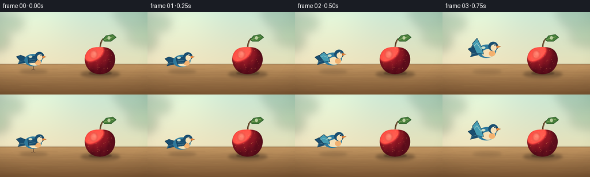
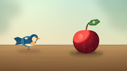
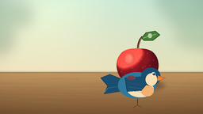
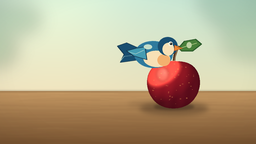

CODING AGENTS AS PIXEL WORLD MODELS
traex/DeepSeek-V4.1-Flash · dynamic_spatial_relationship_0039
点击播放 · 原生 RGB 像素
逐轮保存的候选
回放视频、检查图与代码变化。
每份候选均可单独播放。实际图片检查记录在下方工具轨迹中。
候选 01播放与检查图
点击播放 · 原生 RGB 像素


展开代码变化
--- 上一保存版本
+++ 本次保存版本
@@ -0,0 +1,460 @@
+from __future__ import annotations
+
+import math
+from pathlib import Path
+
+import numpy as np
+from PIL import Image, ImageDraw, ImageFilter
+
+import artifact_io
+
+
+WIDTH = 256
+HEIGHT = 144
+FRAMES = 20
+FPS = 4.0
+SS = 4
+SCALE = WIDTH * SS
+SCENE_W = WIDTH * SS
+SCENE_H = HEIGHT * SS
+TABLE_Y = 91
+
+
+def _rgba(color):
+ if len(color) == 4:
+ return color
+ return (*color, 255)
+
+
+def _polygon(draw, points, fill, outline=None, width=1):
+ draw.polygon(points, fill=_rgba(fill))
+ if outline is not None:
+ draw.line(points + [points[0]], fill=_rgba(outline), width=width, joint="curve")
+
+
+def _shadow(canvas, cx, cy, rx, ry, alpha, blur):
+ pad = int((blur * 3 + 4) * SS)
+ left = int((cx - rx) * SS) - pad
+ top = int((cy - ry) * SS) - pad
+ right = int((cx + rx) * SS) + pad
+ bottom = int((cy + ry) * SS) + pad
+ layer = Image.new("RGBA", (right - left, bottom - top), (0, 0, 0, 0))
+ draw = ImageDraw.Draw(layer)
+ draw.ellipse(
+ (pad, pad, pad + int(2 * rx * SS), pad + int(2 * ry * SS)),
+ fill=(38, 24, 17, alpha),
+ )
+ layer = layer.filter(ImageFilter.GaussianBlur(blur * SS))
+ canvas.alpha_composite(layer, (left, top))
+
+
+def build_background():
+ yy, xx = np.mgrid[0:SCENE_H, 0:SCENE_W].astype(np.float32)
+ u = xx / SCENE_W
+ v = yy / SCENE_H
+
+ top = np.array([205, 231, 215], dtype=np.float32)
+ middle = np.array([236, 225, 190], dtype=np.float32)
+ blend = np.clip(yy / (TABLE_Y * SS), 0, 1)[..., None]
+ image = top * (1 - blend) + middle * blend
+
+ glow = np.exp(-(((xx - 54 * SS) / (72 * SS)) ** 2 + ((yy + 12 * SS) / (86 * SS)) ** 2))
+ image += glow[..., None] * np.array([22, 17, 6], dtype=np.float32)
+ image -= np.array([8, 0, 5], dtype=np.float32) * (u**2)[..., None]
+
+ # Soft, out-of-focus garden foliage frames the scene without competing with the subjects.
+ foliage = Image.new("RGBA", (SCENE_W, SCENE_H), (0, 0, 0, 0))
+ fdraw = ImageDraw.Draw(foliage)
+ clusters = [
+ (-16, 20, 32, 20, (44, 96, 72, 70)),
+ (-8, 50, 25, 18, (68, 123, 86, 65)),
+ (18, 20, 23, 15, (58, 112, 78, 54)),
+ (241, 14, 34, 19, (52, 105, 77, 56)),
+ (252, 43, 30, 16, (76, 126, 83, 52)),
+ (224, 5, 26, 14, (44, 98, 72, 44)),
+ ]
+ for x, y, rx, ry, color in clusters:
+ fdraw.ellipse(
+ (
+ (x - rx) * SS,
+ (y - ry) * SS,
+ (x + rx) * SS,
+ (y + ry) * SS,
+ ),
+ fill=color,
+ )
+ foliage = foliage.filter(ImageFilter.GaussianBlur(8 * SS))
+ base = Image.fromarray(np.clip(image, 0, 255).astype(np.uint8), "RGB").convert("RGBA")
+ base.alpha_composite(foliage)
+
+ # Warm tabletop with fine grain and a softly lit front edge.
+ table_y = TABLE_Y * SS
+ table = Image.new("RGBA", (SCENE_W, SCENE_H - table_y), (0, 0, 0, 0))
+ tdraw = ImageDraw.Draw(table)
+ for y in range(SCENE_H - table_y):
+ f = y / max(1, SCENE_H - table_y - 1)
+ color = (
+ int(203 - 80 * f),
+ int(158 - 72 * f),
+ int(103 - 53 * f),
+ 255,
+ )
+ tdraw.line((0, y, SCENE_W, y), fill=color)
+
+ grain = Image.new("RGBA", table.size, (0, 0, 0, 0))
+ gdraw = ImageDraw.Draw(grain)
+ rng = np.random.default_rng(39039)
+ for _ in range(95):
+ y = rng.integers(2, max(3, SCENE_H - table_y - 2))
+ phase = rng.uniform(0, math.tau)
+ amp = rng.uniform(0.8, 2.5) * SS
+ points = []
+ for x in range(-8 * SS, SCENE_W + 8 * SS, 9 * SS):
+ gy = y + amp * math.sin(x / (35 * SS) + phase)
+ points.append((x, gy))
+ alpha = int(rng.integers(10, 28))
+ gdraw.line(points, fill=(77, 42, 25, alpha), width=max(1, int(rng.integers(1, 3) * SS)))
+ grain = grain.filter(ImageFilter.GaussianBlur(0.45 * SS))
+ table.alpha_composite(grain)
+ base.alpha_composite(table, (0, table_y))
+
+ lip = Image.new("RGBA", (SCENE_W, SCENE_H), (0, 0, 0, 0))
+ ldraw = ImageDraw.Draw(lip)
+ ldraw.line(
+ (0, table_y, SCENE_W, table_y),
+ fill=(92, 56, 37, 100),
+ width=max(2, int(1.2 * SS)),
+ )
+ lip = lip.filter(ImageFilter.GaussianBlur(0.9 * SS))
+ base.alpha_composite(lip)
+
+ vignette = np.ones((SCENE_H, SCENE_W, 1), dtype=np.float32)
+ nx = (xx / SCENE_W - 0.5) * 2
+ ny = (yy / SCENE_H - 0.5) * 2
+ edge = np.clip((nx * nx * 0.55 + ny * ny * 0.45 - 0.45) / 1.35, 0, 1)
+ vignette -= edge[..., None] * 0.15
+ arr = np.asarray(base, dtype=np.float32)
+ arr[..., :3] *= vignette
+ return Image.fromarray(np.clip(arr, 0, 255).astype(np.uint8), "RGBA")
+
+
+def make_apple():
+ size = 124 * SS
+ cx = size // 2
+ cy = 64 * SS
+ rx = 27 * SS
+ ry = 25 * SS
+
+ points = []
+ for i in range(360):
+ a = math.tau * i / 360
+ sin_a = math.sin(a)
+ cos_a = math.cos(a)
+ x = cx + rx * sin_a * (1.0 + 0.025 * math.cos(2 * a)) + 0.8 * SS * math.sin(2 * a)
+ y = cy - ry * cos_a
+ if cos_a > 0:
+ y += 2.2 * SS * (cos_a**7)
+ else:
+ y -= 0.7 * SS * ((-cos_a) ** 8)
+ points.append((x, y))
+
+ mask = Image.new("L", (size, size), 0)
+ ImageDraw.Draw(mask).polygon(points, fill=255)
+
+ yy, xx = np.mgrid[0:size, 0:size].astype(np.float32)
+ nx = (xx - cx) / rx
+ ny = (yy - cy) / ry
+ r2 = np.clip(nx * nx + ny * ny, 0, 1)
+ nz = np.sqrt(1 - r2)
+
+ light = np.array([-0.52, -0.68, 0.52], dtype=np.float32)
+ light /= np.linalg.norm(light)
+ diffuse = np.clip(nx * light[0] + ny * light[1] + nz * light[2], 0, 1)
+ diffuse = 0.30 + 0.82 * diffuse
+
+ dark = np.array([74, 9, 26], dtype=np.float32)
+ red = np.array([181, 31, 42], dtype=np.float32)
+ hot = np.array([241, 111, 71], dtype=np.float32)
+ color = dark + (red - dark) * diffuse[..., None]
+ spec = np.clip((nx * -0.62 + ny * -0.78 + nz * 0.70 - 0.73) / 0.19, 0, 1) ** 2
+ color += hot * (spec[..., None] * 0.60)
+
+ streak = 0.5 + 0.5 * np.sin(nx * 13.0 + ny * 2.0)
+ color -= (streak[..., None] * np.array([9, 3, 3], dtype=np.float32))
+ color *= (0.72 + 0.28 * nz[..., None])
+
+ rgba = np.zeros((size, size, 4), dtype=np.uint8)
+ rgba[..., :3] = np.clip(color, 0, 255).astype(np.uint8)
+ rgba[..., 3] = np.asarray(mask)
+ apple = Image.fromarray(rgba, "RGBA")
+
+ # Small russet flecks and a pair of soft reflected highlights.
+ flecks = Image.new("RGBA", (size, size), (0, 0, 0, 0))
+ fdraw = ImageDraw.Draw(flecks)
+ rng = np.random.default_rng(8391)
+ for _ in range(48):
+ a = rng.uniform(0, math.tau)
+ rr = math.sqrt(rng.uniform(0.05, 0.84))
+ px = cx + rx * 0.91 * rr * math.cos(a)
+ py = cy + ry * 0.91 * rr * math.sin(a)
+ if mask.getpixel((int(px), int(py))) < 180:
+ continue
+ s = rng.uniform(0.25, 0.75) * SS
+ fdraw.ellipse(
+ (px - s, py - s * 0.65, px + s, py + s * 0.65),
+ fill=(241, 177, 93, int(rng.integers(60, 115))),
+ )
+ flecks.putalpha(Image.fromarray((np.asarray(flecks.getchannel("A")) * (np.asarray(mask) / 255)).astype(np.uint8)))
+ apple.alpha_composite(flecks)
+
+ highlights = Image.new("RGBA", (size, size), (0, 0, 0, 0))
+ hdraw = ImageDraw.Draw(highlights)
+ hdraw.ellipse(
+ (cx - 17 * SS, cy - 17 * SS, cx - 5 * SS, cy - 3 * SS),
+ fill=(255, 214, 178, 54),
+ )
+ hdraw.ellipse(
+ (cx - 12 * SS, cy - 15 * SS, cx - 7 * SS, cy - 8 * SS),
+ fill=(255, 238, 209, 78),
+ )
+ highlights = highlights.filter(ImageFilter.GaussianBlur(1.25 * SS))
+ highlights.putalpha(
+ Image.fromarray(
+ (np.asarray(highlights.getchannel("A")) * (np.asarray(mask) / 255)).astype(np.uint8)
+ )
+ )
+ apple.alpha_composite(highlights)
+
+ # Curved woody stem.
+ stem_layer = Image.new("RGBA", (size, size), (0, 0, 0, 0))
+ sdraw = ImageDraw.Draw(stem_layer)
+ stem = [
+ (cx + 0.5 * SS, cy - 23.5 * SS),
+ (cx + 1.2 * SS, cy - 28 * SS),
+ (cx + 3.0 * SS, cy - 34 * SS),
+ (cx + 6.0 * SS, cy - 38 * SS),
+ ]
+ sdraw.line(stem, fill=(84, 53, 29, 255), width=max(2, int(2.6 * SS)), joint="curve")
+ sdraw.line(
+ [(x + 0.7 * SS, y) for x, y in stem],
+ fill=(146, 94, 48, 125),
+ width=max(1, int(0.65 * SS)),
+ joint="curve",
+ )
+ apple.alpha_composite(stem_layer)
+
+ # Leaf with a visible central vein.
+ leaf = Image.new("RGBA", (size, size), (0, 0, 0, 0))
+ ldraw = ImageDraw.Draw(leaf)
+ leaf_points = [
+ (cx + 5 * SS, cy - 36 * SS),
+ (cx + 11 * SS, cy - 43 * SS),
+ (cx + 22 * SS, cy - 45 * SS),
+ (cx + 28 * SS, cy - 40 * SS),
+ (cx + 19 * SS, cy - 33 * SS),
+ (cx + 8 * SS, cy - 33 * SS),
+ ]
+ _polygon(ldraw, leaf_points, (72, 127, 58, 255), (43, 91, 43, 255), max(1, SS))
+ ldraw.line(
+ [
+ (cx + 7 * SS, cy - 36 * SS),
+ (cx + 13 * SS, cy - 38 * SS),
+ (cx + 23 * SS, cy - 41 * SS),
+ ],
+ fill=(177, 196, 108, 170),
+ width=max(1, int(0.8 * SS)),
+ joint="curve",
+ )
+ ldraw.ellipse(
+ (cx + 13 * SS, cy - 42 * SS, cx + 18 * SS, cy - 36 * SS),
+ fill=(130, 167, 78, 80),
+ )
+ apple.alpha_composite(leaf)
+ return apple
+
+
+def make_bird(pose, wing_phase, bird_scale):
+ size = 122 * SS
+ c = size / 2
+ k = bird_scale * SS
+
+ def pt(x, y):
+ return (c + x * k, c + y * k)
+
+ def box(x0, y0, x1, y1):
+ return (*pt(x0, y0), *pt(x1, y1))
+
+ sprite = Image.new("RGBA", (size, size), (0, 0, 0, 0))
+ d = ImageDraw.Draw(sprite)
+
+ navy = (24, 57, 79, 255)
+ blue = (46, 122, 157, 255)
+ blue_light = (69, 156, 178, 255)
+ blue_dark = (25, 78, 112, 255)
+ teal = (38, 134, 151, 255)
+ cream = (247, 224, 181, 255)
+ warm = (243, 177, 111, 255)
+ orange = (238, 133, 48, 255)
+ leg = (82, 61, 48, 255)
+
+ if pose == "fly":
+ wing = math.sin(wing_phase)
+ far_wing = [
+ pt(-8, -4),
+ pt(-18, -9 - 9 * wing),
+ pt(-25, -5 - 5 * wing),
+ pt(-12, 4),
+ ]
+ _polygon(d, far_wing, (29, 91, 124, 235), (19, 63, 90, 255), max(1, int(0.7 * SS)))
+
+ # Tail.
+ tail = [
+ pt(-8, -3),
+ pt(-23, -9),
+ pt(-31, -6),
+ pt(-25, 1),
+ pt(-28, 8),
+ pt(-10, 5),
+ ]
+ _polygon(d, tail, blue_dark, navy, max(1, int(0.8 * SS)))
+ d.line(
+ [pt(-11, 1), pt(-25, 3), pt(-28, 7)],
+ fill=(79, 156, 171, 150),
+ width=max(1, int(0.55 * SS)),
+ )
+
+ if pose == "stand":
+ leg_y = 12 if pose == "crouch" else 18
+ d.line([pt(1, 8), pt(1, leg_y)], fill=leg, width=max(1, int(1.1 * SS)))
+ d.line([pt(1, leg_y), pt(-2.5, leg_y + 1.5)], fill=leg, width=max(1, int(0.8 * SS)))
+ d.line([pt(1, leg_y), pt(4.5, leg_y + 1.5)], fill=leg, width=max(1, int(0.8 * SS)))
+
+ # Body and pale breast.
+ d.ellipse(box(-16, -11, 17, 12), fill=blue)
+ d.ellipse(box(-8, -3, 15, 11), fill=cream)
+ d.ellipse(box(4, 0, 15, 10), fill=warm)
+
+ # Folded wing or an animated wing in flight.
+ if pose == "fly":
+ wing = math.sin(wing_phase)
+ near_wing = [
+ pt(-7, -6),
+ pt(-14, -9 - 15 * wing),
+ pt(-23, -5 - 10 * wing),
+ pt(-17, 2),
+ pt(-5, 5),
+ ]
+ _polygon(d, near_wing, blue_light, navy, max(1, int(0.75 * SS)))
+ d.line(
+ [pt(-8, -3), pt(-15, -3 - 12 * wing), pt(-21, -3 - 7 * wing)],
+ fill=(206, 230, 220, 105),
+ width=max(1, int(0.55 * SS)),
+ )
+ else:
+ wing = [
+ pt(-10, -6),
+ pt(4, -7),
+ pt(10, -2),
+ pt(4, 5),
+ pt(-8, 6),
+ ]
+ _polygon(d, wing, blue_dark, navy, max(1, int(0.75 * SS)))
+ for offset in (-1.5, 2.0, 5.0):
+ d.line(
+ [pt(-7, offset), pt(5, offset + 1.5)],
+ fill=(94, 175, 185, 125),
+ width=max(1, int(0.45 * SS)),
+ )
+
+ # Head, face, eye, and beak.
+ d.ellipse(box(4, -15, 21, 1), fill=blue_dark)
+ d.ellipse(box(8, -10, 18, 1), fill=cream)
+ d.ellipse(box(13.0, -11.0, 16.7, -7.3), fill=(247, 244, 220, 255))
+ d.ellipse(box(14.3, -10.2, 16.3, -8.2), fill=(16, 24, 26, 255))
+ d.ellipse(box(14.8, -9.9, 15.4, -9.3), fill=(255, 255, 240, 255))
+ beak = [pt(18.5, -8.2), pt(25.5, -5.7), pt(18.4, -3.1)]
+ _polygon(d, beak, orange, (160, 72, 28, 255), max(1, int(0.55 * SS)))
+ d.line(
+ [pt(18.8, -6.7), pt(24.2, -5.7)],
+ fill=(113, 54, 29, 150),
+ width=max(1, int(0.4 * SS)),
+ )
+
+ # Tiny shoulder catchlight gives the small sprite a rounded, bird-like form.
+ d.ellipse(box(-8, -8, -1, -4), fill=(126, 195, 201, 70))
+ return sprite
+
+
+def render_frame(frame_index):
+ canvas = build_background()
+ apple = make_apple()
+ apple_center = (173.5, 84.0)
+ apple_left = int(apple_center[0] * SS - apple.width / 2)
+ apple_top = int(apple_center[1] * SS - 64 * SS)
+
+ _shadow(canvas, 174, 108.5, 34, 6.2, 86, 2.5)
+ _shadow(canvas, 174, 106.8, 20, 3.2, 96, 1.2)
+ canvas.alpha_composite(apple, (apple_left, apple_top))
+
+ # The bird pauses, launches, travels in an arc, and settles in the foreground.
+ keyframes = {
+ 0: (57.0, 83.5, 0.92, "stand"),
+ 1: (59.0, 85.2, 0.92, "crouch"),
+ 2: (65.0, 81.5, 0.97, "fly"),
+ 3: (76.0, 68.0, 1.01, "fly"),
+ 4: (91.0, 57.0, 1.04, "fly"),
+ 5: (108.0, 50.0, 1.07, "fly"),
+ 6: (126.0, 47.0, 1.10, "fly"),
+ 7: (142.0, 48.0, 1.13, "fly"),
+ 8: (153.0, 54.0, 1.16, "fly"),
+ 9: (160.0, 64.0, 1.20, "fly"),
+ 10: (164.0, 77.0, 1.25, "fly"),
+ 11: (167.0, 89.0, 1.31, "fly"),
+ 12: (169.0, 98.0, 1.37, "fly"),
+ 13: (171.0, 103.0, 1.42, "fly"),
+ 14: (172.0, 107.0, 1.45, "stand"),
+ 15: (172.0, 106.6, 1.45, "stand"),
+ 16: (172.0, 107.4, 1.45, "stand"),
+ 17: (172.0, 106.8, 1.45, "stand"),
+ 18: (172.0, 107.2, 1.45, "stand"),
+ 19: (172.0, 107.0, 1.45, "stand"),
+ }
+ x, y, bird_scale, pose = keyframes[frame_index]
+
+ if pose == "fly":
+ phase = math.tau * (frame_index - 2) / 4.0 + 0.30
+ else:
+ phase = 0.0
+
+ # A soft moving shadow connects the bird to the tabletop during the flight.
+ flight = max(0.0, min(1.0, (frame_index - 1) / 12.0))
+ shadow_x = x + 1.5
+ shadow_y = 104.0 + 0.25 * flight
+ shadow_alpha = int(50 - 25 * math.sin(math.pi * flight))
+ _shadow(canvas, shadow_x, shadow_y, 16 + 9 * bird_scale, 3.8 + flight, shadow_alpha, 2.4)
+
+ sprite = make_bird(pose, phase, bird_scale)
+ if pose == "fly":
+ angle = 7.0 - 15.0 * flight
+ elif frame_index == 1:
+ angle = 4.0
+ else:
+ angle = 0.0
+ if abs(angle) > 0.01:
+ sprite = sprite.rotate(angle, resample=Image.Resampling.BICUBIC, expand=False)
+ left = int(x * SS - sprite.width / 2)
+ top = int(y * SS - sprite.height / 2)
+ canvas.alpha_composite(sprite, (left, top))
+
+ return canvas.convert("RGB").resize((WIDTH, HEIGHT), Image.Resampling.LANCZOS)
+
+
+def main():
+ case_dir = Path(__file__).resolve().parent
+ frames = np.stack([np.asarray(render_frame(i), dtype=np.uint8) for i in range(FRAMES)])
+ artifact_io.save(frames, case_dir)
+ print(f"wrote {FRAMES} frames to {case_dir / 'pixels.npz'}")
+
+
+if __name__ == "__main__":
+ main()
可观测工具轨迹
实际执行的命令与返回图片。
命令 1exit 0
/bin/bash -c "pwd && rg --files -g 'prompt.txt' -g 'GENERATION_RULES.md' -g 'task_spec.json' -g '"'!node_modules'"' -g '"'!vendor'"'"
命令 2exit 0
/bin/bash -c "sed -n '1,240p' GENERATION_RULES.md"
命令 3exit 0
/bin/bash -c "printf '%s\\n' '--- prompt.txt ---'; cat prompt.txt; printf '%s\\n' '--- task_spec.json ---'; cat task_spec.json"
命令 4exit 1
/bin/bash -c "find . -maxdepth 2 -type f -printf '%p\\n' | sort | sed -n '1,240p'; printf '%s\\n' '--- tools ---'; command -v ffmpeg; command -v python3; command -v blender; command -v node; command -v convert; command -v magick"
命令 5exit 0
/bin/bash -c "sed -n '1,260p' artifact_io.py"
命令 6exit 0
/bin/bash -c "sed -n '1,260p' player_template.html"
命令 7exit 0
/bin/bash -c "python3 - <<'PY'
import importlib.util
for m in ('numpy','PIL','imageio','cv2','matplotlib'):
print(m, bool(importlib.util.find_spec(m)))
PY"命令 8exit 0
/bin/bash -c 'python3 generate.py'
命令 9exit 0
/bin/bash -c "python3 - <<'PY'
from pathlib import Path
import numpy as np
from PIL import Image
p=Path('.')
z=np.load(p/'pixels.npz')['pixels']
print('pixels.npz:', z.shape, z.dtype, 'value_range', int(z.min()), int(z.max()))
files=sorted((p/'frames').glob('*.png'))
print('frames:', len(files), 'first/last', files[0].name, files[-1].name)
for f in (files[0], files[-1]):
im=Image.open(f)
print(f.name, im.size, im.mode)
print('inspection:', Image.open(p/'inspection.png').size)
print('index.html bytes:', (p/'index.html').stat().st_size)
PY"命令 10exit 0
/bin/bash -c 'git status --short; python3 -m py_compile generate.py'
视觉工具实际返回图片 1

视觉工具实际返回图片 2

视觉工具实际返回图片 3

视觉工具实际返回图片 4

视觉工具实际返回图片 5

保存候选 1 份；完成命令 10 次；可验证图片返回 5 张。原始 API 响应与完整日志保留在本地。